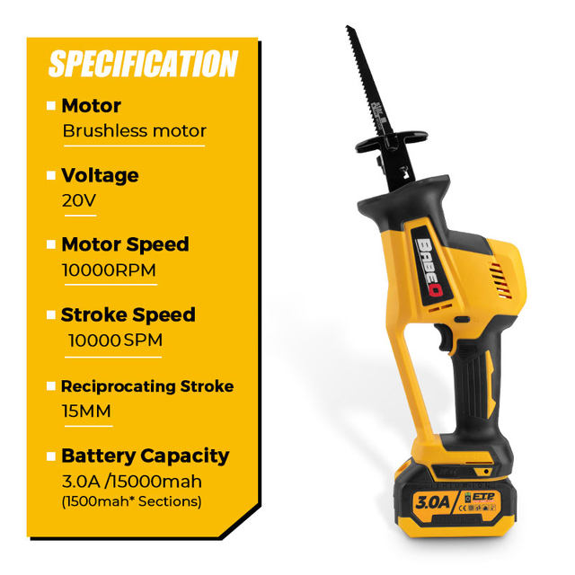
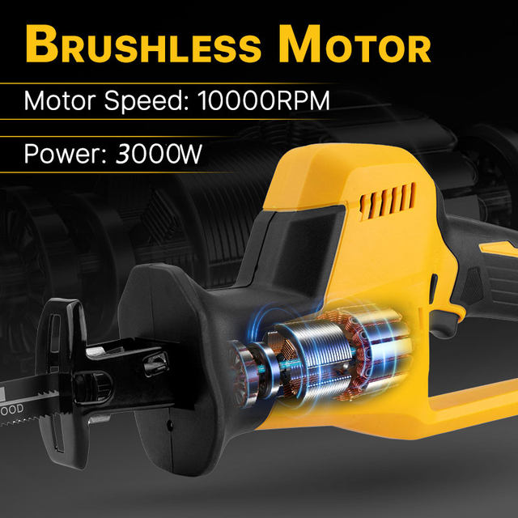
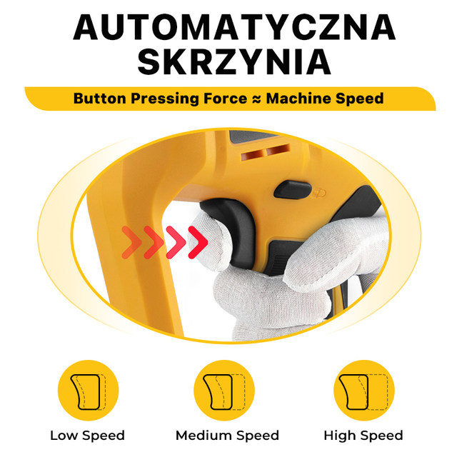
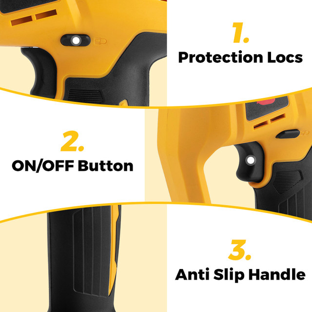
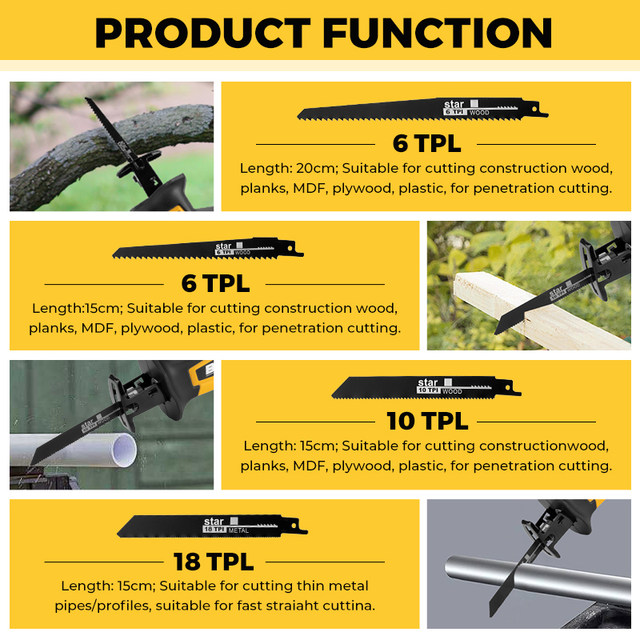
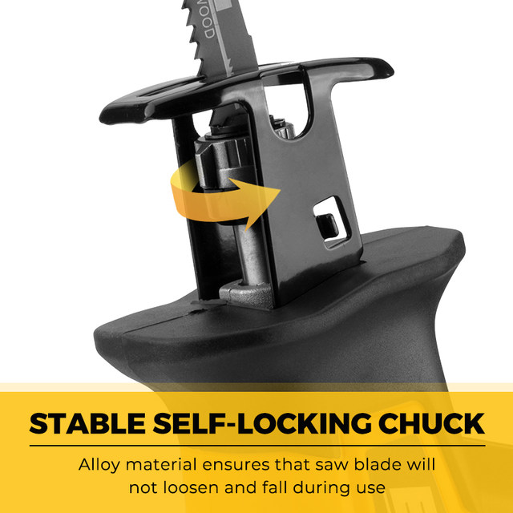
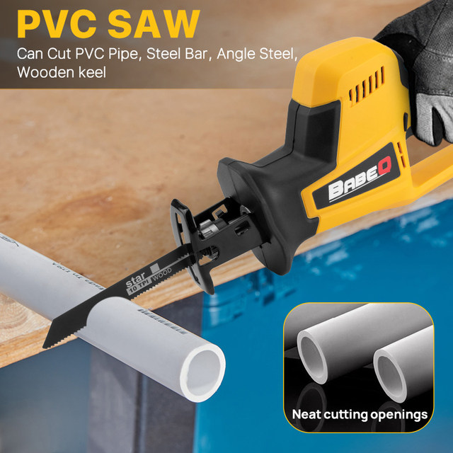
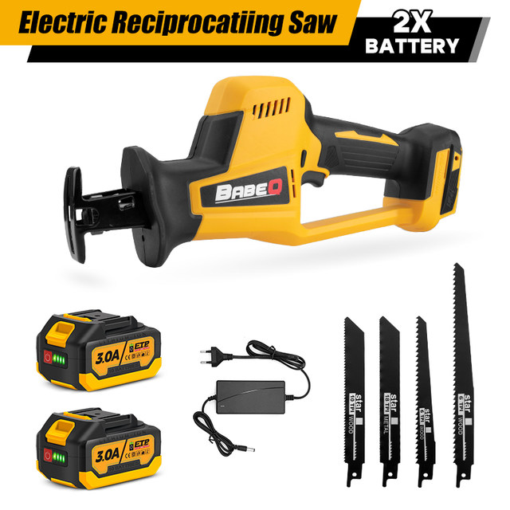
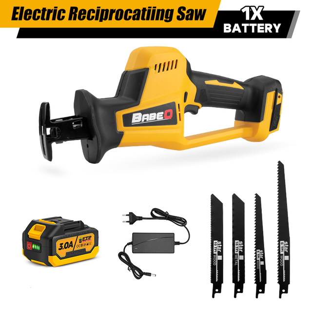

BABEQ Brushless Reciprocating Saw Multifunction Sabersaw Cordless Electric Saw Metal Wood PVC Cutting Tool For Makita 18VBattery
Specifications:
Name: Reciprocating Saw
Motor: Brushless Motor
Motor Speed: 10000RPM
Stroke Speed: 10000SPM
Stroke Length: 15mm
Battery Capacity: 3.0A /15000mAh (1500mAh *10 cells)
Compatible with: For MAKITA 18V Battery
Features:
(1)One handed design gives you superior control to standard reciprocating saws, especially when you're working in tight conditions.
(2)Anti-vibration handle: the handle is specially designed to reduce user fatigue when ripping through heavier pieces of lumber.
(3)Quick lock blade Clamp: you need only to tighten and loosen the on-board latch near the front of the tool to be able to replace blades with ease.
(4)One-handed design provides superior control and versatility over a standard reciprocating saw.Compact size allows for cutting in tight spaces, and light weight makes overhead work easier.
Package Included:
Option with 1 Battery
1 X Reciprocating Saw
1 X Battery
1 X Charger
4 X Saw Blades
Option with 2 Battery
1 X Reciprocating Saw
2 X Battery
1 X Charger
4 X Saw Blades








